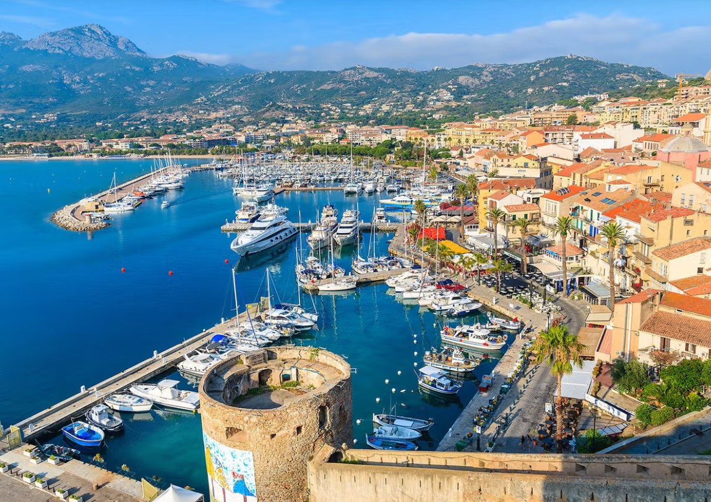

A tenger fölé magasodó, hatalmas gránit promontóriumra épült Calvi citadella Korzika egyik legimpozánsabb katonai és építészeti monumentuma. Az erődítmény magvát a 13. században kezdték el kiépíteni a genovaiak, hogy biztosítsák hatalmukat a sziget északi része felett a rivális piszaiakkal és a lázadó korzikai urakkal szemben. A citadella masszív, áttörhetetlen falai és bástyái hűen tükrözik a város történelmi mottóját: „Civitas Calvi Semper Fidelis" (Calvi városa mindig hűséges) – utalva arra, hogy a település az elkeseredett ostromok idején is mindvégig kitartott a Genovai Köztársaság mellett. Az ódon kapun belépve egy teljesen különálló, kőből faragott világba érkezünk, ahol a szűk, kanyargós sikátorok és a masszív bástyák máig őrzik a középkori tengeri nagyhatalom tekintélyét.
A citadella falai között sétálva az utazó azonnal belebotlik a történelem egyik legizgalmasabb és legtöbbet vitatott kulturális legendájába. Egy romos kőfal maradványa jelöli azt a helyet, ahol a helyi hagyomány szerint Christopher Columbus (Amerigo Vespucci kortársa, a nagy felfedező) született 1451-ben, amikor Calvi még a Genovai Köztársaság szerves része volt. Bár a hivatalos történettudomány Genovát tekinti a szülőhelyének, a calviak büszkén és elszántan őrzik a tengerész emlékét. Nem messze a romoktól magasodik a Keresztelő Szent János-katedrális (Pro-cathédrale Saint-Jean-Baptiste), amelynek barokk belső tere és fenséges kupolája a citadella spirituális központja, és amely otthont ad a sziget egyik legszentebb ereklyéjének, a Csodatevő Fekete Krisztus-szobornak.
A citadella bástyáiról nyíló 360 fokos panoráma nemcsak vizuális élmény, hanem egy drámai katonai összecsapás színhelye is. 1794-ben, a francia forradalmi háborúk idején Pasquale Paoli hívására a brit flotta vette ostrom alá az erődöt. A tüzérségi rohamot az a fiatal Horatio Nelson kapitány (a későbbi trafalgari hős admirális) irányította a szárazföld felőli magaslatokról, aki az egyik leghevesebb calvi ágyútűz során, a becsapódó golyók által felvert sziklatörmelék és homok miatt végzetesen megsérült, és végleg elveszítette a jobb szemére a látást. A citadella falai ma is viselik ezeknek a kíméletlen harcoknak a nyomait, miközben a bástyák pereméről lenézve a látóhatárt a Calvi-öböl luxusjachtokkal teli, türkizkék vize és a háttérben magasodó, hósipkás korzikai hegyvonulatok uralják.